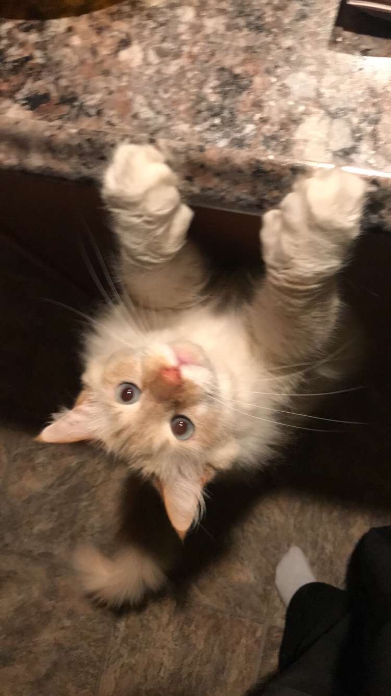
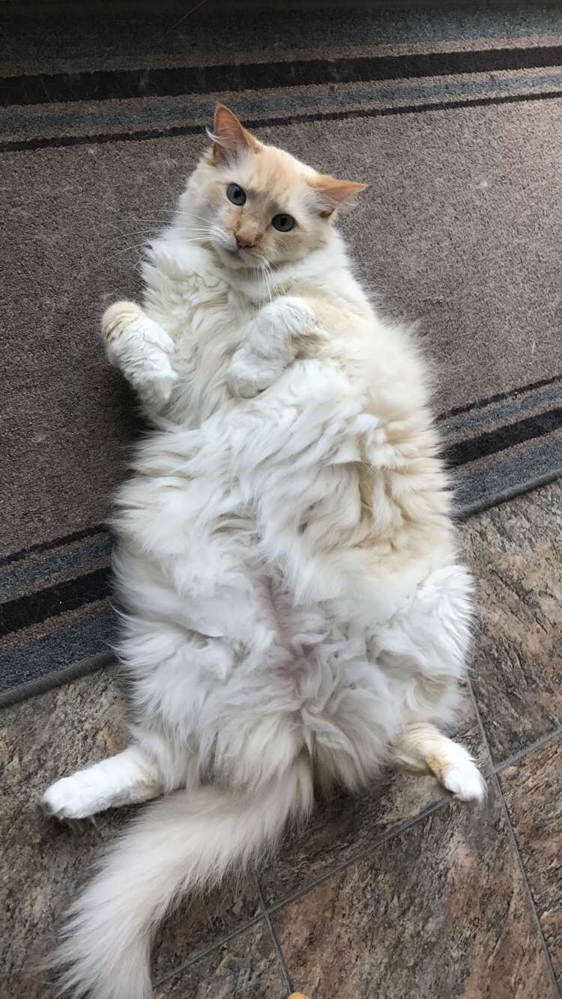
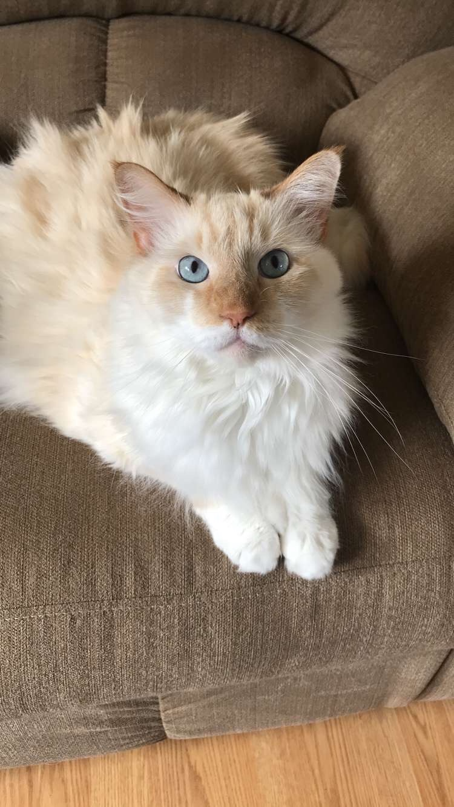
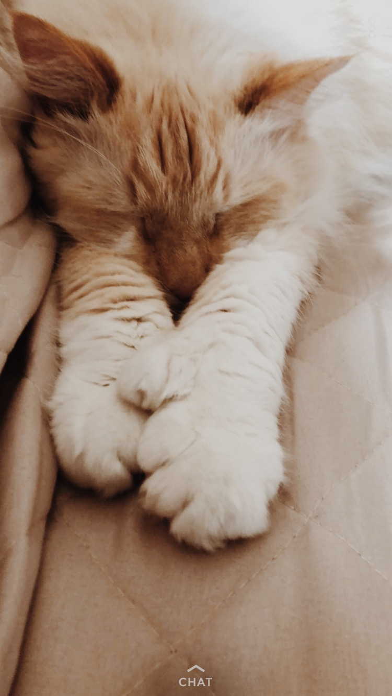

Hi Everybody! My name is Heather Goan and I am a 20 year old Accounting major at the University of Maine. I was born and raised in Southern Maine, and attended the Brunswick school systems. Although I love Brunswick to pieces, my favorite place to be is up North at our camp in Eustis, ME. I started going up to camp when I was about ten years old, and ever since then I try to get up there as much as I can. I also really enjoy kayaking when I am up at camp. Our camp is located on Chain of Ponds, and it is the most scenic area you could imagine. I also enjoy hanging out with friends, going to concerts, and seeing my family as often as possible.
On this page I also want to introduce you to my cat, Casper. We adopted him from the shelter back when I was twelve years old, and we have been best buds ever since. He is the most loving, energetic, and happiest cat I know. We are so happy he found his was into our family, and he has made such a difference in all of our lives.
   